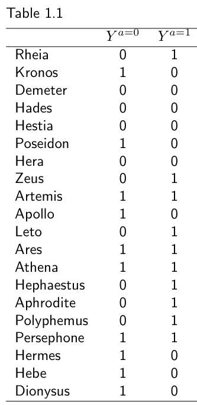
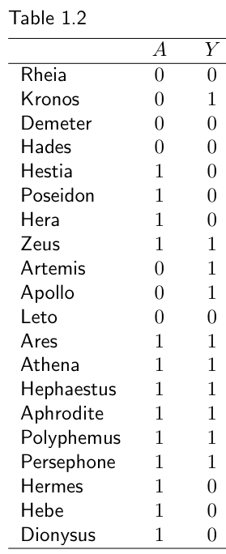
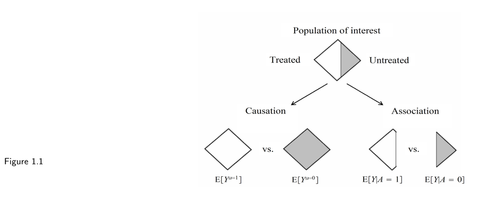

第一部分 · 无模型的因果推断 · Part I — Causal inference without models
第 1 章 · 因果效应的定义
Hernán MA, Robins JM（2020）. Causal Inference: What If. Chapter 1. 本页为中文全文翻译，附译注。
作为一个人，你其实早就熟悉因果推断的基本概念了。光凭活着这件事，你就知道什么是因果效应，明白关联与因果的差别，而且你一辈子都在自觉地运用这些知识。假如不然，你早就死了。没有基本的因果概念，你压根活不到能读这一章，更别说学会读书。蹒跚学步的时候，看见有人跳进游泳池后来拿到了果酱罐，你也会跟着往下跳；十几岁的时候，看见有人从最险的雪坡上冲下去、赢下了下一场滑雪比赛，你也会跟着滑下去；当了父母以后，观察到吃了药的孩子第二天没出现在公园里，你就不肯给自家生病的孩子吃抗生素。既然你已经懂得因果效应的定义，也懂得关联与因果的差别，就别指望这一章能给你什么深刻的概念性洞见。这一章的目的是引入一套数学记号，把你本就拥有的因果直觉形式化。请务必确认一件事：你能让自己那份因果直觉，与这里引入的数学记号一一对上。这套记号是精确定义因果概念所必需的，全书都会一直用它。
1.1 个体因果效应
Zeus 是一名等待心脏移植的患者。1 月 1 日，他接受了一颗新心脏。五天后，他死了。设想我们不知通过什么途径——也许靠神谕——得知：假如 Zeus 在 1 月 1 日没有接受心脏移植，五天后他还活着。掌握了这条信息，多数人都会同意：那次移植导致了 Zeus 的死亡。心脏移植这项干预对 Zeus 的五日存活有因果效应。
另一位患者 Hera 也在 1 月 1 日接受了心脏移植。五天后她还活着。同样设想我们得知：假如 Hera 在 1 月 1 日没有接受那颗心脏，五天后她也还活着。于是，这次移植对 Hera 的五日存活没有因果效应。
这两个小故事说明了人类是怎么推理因果效应的：我们（通常只在脑子里）把采取行动 A 时的结局，与不采取行动 A 时的结局摆在一起比较。如果两个结局不同，我们就说行动 A 对该结局有因果效应——既可能是致病性的，也可能是保护性的。若两者相同，我们说行动 A 对该结局没有因果效应。
Karma 是另一个常被用来指称"会带来结局的行动"的词。流行病学家、统计学家、经济学家和其他社会科学研究者，会把行动 A 称作干预（intervention）、暴露（exposure）、政策（policy）或治疗（treatment）。要让我们的因果直觉经得起数学与统计的分析，就得引入一些记号。设处理变量 A 是二值的（1：接受处理，0：不接受处理），结局变量 Y 也是二值的（1：死亡，0：存活）。在本书中，像 A 和 Y 这样在不同个体身上可能取不同值的变量，我们当作随机变量来处理；用小写字母表示随机变量的某个具体取值。
令 Ya=1（读作"处理 a = 1 下的 Y"）指在处理取值 a = 1 下本会被观测到的结局变量，Ya=0 指在处理取值 a = 0 下本会被观测到的结局变量。Ya=1 和 Ya=0 同样是随机变量。Zeus 的 Ya=1 = 1 且 Ya=0 = 0，因为他接受了处理后死去，而若不接受处理本可活下来；Hera 的 Ya=1 = 0 且 Ya=0 = 0，因为她接受了处理后活着，若不接受处理也会活着。
现在可以给出一个形式化的定义：个体 i 的因果效应为 Yia=1 ≠ Yia=0。也就是说，若对某个个体而言 Ya=1 ≠ Ya=0，则处理 A 对该个体的结局 Y 有因果效应。因此，处理对 Zeus 的结局有因果效应，因为 Ya=1 = 1 ≠ 0 = Ya=0；对 Hera 的结局则没有，因为 Ya=1 = 0 = Ya=0。Ya=1 和 Ya=0 这两个变量被称为潜在结局（potential outcomes）或反事实结局（counterfactual outcomes）。有些作者偏好"潜在结局"这个词，为的是强调：视所接受的处理而定，这两个结局中的任何一个都可能被观测到。另一些作者偏好"反事实结局"，为的是强调这两个结局代表的是可能根本不发生的情形（也就是"与事实相反"的情形）。
对每个个体来说，两个反事实结局里有一个是事实性的——就是与该个体实际接受的处理取值相对应的那一个。举例来说，Zeus 实际接受了处理（A = 1），所以他在处理下的反事实结局 Ya=1 = 1 就等于他被观测到的（实际的）结局 Y = 1。也就是说，一个观测到的处理 A 等于 a 的个体，其观测结局 Y 等于他在 a 下的反事实结局 Ya。这个等式可以简写成 Y = YA，其中 YA 表示在 a 取个体实际所接受的那个处理值处求值的反事实 Ya。等式 Y = YA 被称为一致性（consistency）。
个体 i 的因果效应：Yia=1 ≠ Yia=0 一致性：若 Ai = a，则 Yia = YiA = Yi
这里有个记号上的小细节。有时我们把"个体 i 的结局为 Ya=1"这件事简写成 Yia=1。严格地说，当 i 指代某个特定的个体（比如 Zeus）时，Yia 并不是随机变量，因为我们假定该个体的反事实结局是确定性的（见技术要点 1.2）。
个体因果效应被定义为反事实结局取值之间的对比，但每个个体身上只有其中一个反事实结局能被观测到——就是与该个体实际经历的处理取值相对应的那一个，其余全部观测不到。由于存在这种数据缺失，个体因果效应是不可识别的（identified）：它无法表示成观测数据的函数（有一个可能的例外，见精细辨析 2.1）。
1.2 平均因果效应
定义一个个体因果效应需要三样东西：一个感兴趣的结局；要比较的两个动作 a = 1 和 a = 0；以及那个反事实结局 Ya=0 与 Ya=1 待比较的个体。但由于个体因果效应一般不可识别，我们把目光转向一种聚合起来的因果效应：某个人群中的平均因果效应。要定义它，仍然需要三样东西：一个感兴趣的结局；要比较的两个动作 a = 1 和 a = 0；以及一个人群——其成员的结局 Ya=0 与 Ya=1 待比较。
就拿 Zeus 的大家族当作我们感兴趣的人群。表 1.1 列出这 20 位成员在处理下（a = 1）和不处理下（a = 0）的反事实结局。先看最后一列：若每个人都接受处理（心脏移植），本会被观测到的结局 Ya=1。人群中有一半成员（20 人中的 10 人）若接受心脏移植就会死亡。也就是说，若全体成员都接受 a = 1，会出现结局的个体比例为 Pr[Ya=1 = 1] = 10/20 = 0.5。

Ya=1 与不处理 Ya=0 下的反事实结局。1 表示死亡，0 表示存活。两列各有 10 个 1。再看表 1.1 的另一列，我们可以得出：人群中有一半成员（20 人中的 10 人）若不接受心脏移植就会死亡。也就是说，若全体成员都接受 a = 0，会出现结局的个体比例为 Pr[Ya=0 = 1] = 10/20 = 0.5。我们算出的处理下反事实风险是 0.5，做法是数出死亡人数（10）再除以总人数（20）；这与计算全体成员反事实结局的平均值是同一件事。要看清二值结局下风险与平均值的等价性，可以用表 1.1 的数据算一算 Ya=1 的平均值，结果同样是 0.5。
现在可以给出形式化定义了：若在感兴趣的人群中 Pr[Ya=1 = 1] ≠ Pr[Ya=0 = 1]，则处理 A 对结局 Y 存在平均因果效应。按这一定义，在我们这群人当中，处理 A 对结局 Y 并无平均因果效应，因为处理下的死亡风险 Pr[Ya=1 = 1] 与不处理下的死亡风险 Pr[Ya=0 = 1] 都是 0.5。无论有没有人真的接受心脏移植，结论都一样：两种情况下都会有一半人死亡。像这里这样，人群中的平均因果效应为零，我们就说因果零假设（causal null hypothesis）成立。由于风险就等于平均值，而字母 E 通常用来表示总体的平均或期望（'E'xpectation），我们可以把"平均因果效应不为零"的定义改写为 E[Ya=1] ≠ E[Ya=0]，这样它就同时适用于二值和非二值结局了。
"心脏移植 A 的平均因果效应"是否存在，是通过"接受心脏移植（a = 1）"与"不接受心脏移植（a = 0）"这两个动作之间的对比来定义的。当可能的动作不止两个（即处理不是二值的）时，就必须先指明我们感兴趣的具体对比。举例来说，光说"阿司匹林的因果效应"是没有意义的，除非我们指明所关心的对比是："在存活期间每日口服 150 mg 阿司匹林（必要时经鼻胃管）持续 5 年"对"不服阿司匹林"。这个因果效应是定义良好的，即便在其他干预下的反事实结局并未定义良好、甚至根本不存在（比如"在存活期间每日经皮肤吸收 500 mg 阿司匹林持续 5 年"）。
平均因果效应不存在，并不意味着个体效应也不存在。表 1.1 显示，处理对人群中 12 位成员（包括 Zeus）有因果个体效应，因为这 12 人的反事实结局 Ya=1 与 Ya=0 取值不同。这 12 人当中，6 人被处理所伤害（包括 Zeus，Ya=1 − Ya=0 = 1），6 人被处理所帮助（Ya=1 − Ya=0 = −1）。这个等式不是巧合：平均因果效应 E[Ya=1] − E[Ya=0] 恒等于个体因果效应 Ya=1 − Ya=0 的平均值 E[Ya=1 − Ya=0]，因为"均值之差等于差之均值"。当人群中没有任何个体有因果效应时，也就是对所有个体都有 Ya=1 = Ya=0 时，我们说强因果零假设（sharp causal null hypothesis）成立。强因果零假设蕴含因果零假设。
正如接下来几章将要讨论的，即便个体因果效应无法识别，平均因果效应有时仍可从数据中识别出来。从这里开始，我们把"平均因果效应"简称为"因果效应"，把"平均效应为零的零假设"简称为因果零假设。接下来我们描述度量因果效应大小的不同方式。
人群中的平均因果效应：E[Ya=1] ≠ E[Ya=0]
1.3 因果效应的度量
我们已经看到，在 Zeus 这 20 位家族成员构成的人群中，处理"心脏移植"A 对结局"死亡"Y 没有因果效应。因为两个反事实风险 Pr[Ya=1 = 1] 与 Pr[Ya=0 = 1] 都等于 0.5，因果零假设成立。这个零假设有若干等价的表示方式。例如，我们可以说风险 Pr[Ya=1 = 1] 减去风险 Pr[Ya=0 = 1] 等于零（0.5 − 0.5 = 0），或者说风险 Pr[Ya=1 = 1] 除以风险 Pr[Ya=0 = 1] 等于一（0.5/0.5 = 1）。也就是说，我们可以这样表示因果零假设：
(i) Pr[Ya=1 = 1] − Pr[Ya=0 = 1] = 0
(ii) Pr[Ya=1 = 1] / Pr[Ya=0 = 1] = 1
(iii) Pr[Ya=1 = 1]/Pr[Ya=1 = 0] / Pr[Ya=0 = 1]/Pr[Ya=0 = 0] = 1
其中 (i)、(ii)、(iii) 等号左边分别是因果风险差、因果风险比和因果比值比。
人群中的因果风险差是差值尺度上个体因果效应 Ya=1 − Ya=0 的平均值，也就是说，它是平均个体因果效应的一个度量。与此相反，人群中的因果风险比并不是比值尺度上个体因果效应 Ya=1/Ya=0 的平均值：它度量的是人群中的因果效应，但不是任何个体因果效应的平均值。
现在设想另一个处理 A——吸烟——在我们人群中，对我们另一个结局 Y——肺癌——有因果效应。因果零假设不成立：Pr[Ya=1 = 1] 与 Pr[Ya=0 = 1] 不相等。在这种情形下，因果风险差、风险比和比值比都不分别是 0 和 1，而是在不同尺度上量化同一个因果效应的强度。正因为因果风险差、风险比、比值比（以及其他汇总量）都度量因果效应，我们把它们统称为效应度量（effect measures）。
每种效应度量都可以用于不同的目的。举例来说，设想有一个人群，其中若接受治疗每百万人中会有 3 人出现结局，若不接受治疗则每百万人中会有 1 人出现结局。因果风险比是 3，因果风险差是 0.000002。因果风险比（乘性尺度）用来计算：相对于不治疗，治疗把患病风险提高或降低了几倍。因果风险差（加性尺度）用来计算：归因于该处理的疾病病例绝对数究竟有多少。用乘性尺度还是加性尺度，取决于推断的目的。
1.4 随机变异
走到这一步，你完全可以抱怨：我们计算效应度量的这套流程有点不太可信。我们不但无视了"不朽的 Zeus 不会死"这个谁都清楚的事实，而且更要紧的是，表 1.1 里的人群只有 20 个人。感兴趣的人群通常要大得多。
在我们这个极小的人群里，我们从每一个个体身上都收集了信息。实践中，研究者只能从感兴趣的人群里抽取一个样本收集信息。即便所有研究对象的反事实结局都已知道，用样本也使得我们无法得到人群中在处理值 a 下出现结局的那一部分个体的确切比例。例如，不处理下的死亡概率 Pr[Ya=0 = 1] 无法直接计算，只能估计。
随机误差的第一个来源：抽样变异。来看表 1.1 中的这些人。我们此前把他们看作一个二十人的人群。现在不妨把他们看作从一个大得多、近乎无限的超级总体（super-population，比如所有不朽者）中抽出的随机样本。我们把样本中若不接受处理就会死亡者的比例记作 Pr[Yca=0 = 1] = 10/20 = 0.50，其中 Yca=0 读作"未处理下的反事实结局"，c 只是用来提示它是反事实的记号。样本比例 Pr[Yca=0 = 1] 不必恰好等于"若整个超级总体都不接受处理则会死亡者的比例" Pr[Ya=0 = 1]。举例来说，假设人群中 Pr[Ya=0 = 1] = 0.57，但由于抽样变异带来的随机误差，我们这个具体样本里 Pr[Yca=0 = 1] = 0.5。我们用样本比例 Pr[Yca = 1] 来估计处理值 a 下的超级总体概率 Pr[Ya = 1]。Pr 头上这道横线表明 Pr[Yca = 1] 是相应总体量 Pr[Ya = 1] 的估计量。我们说 Pr[Yca = 1] 是 Pr[Ya = 1] 的一致估计量，因为样本中个体数越多，Pr[Yca = 1] 与 Pr[Ya = 1] 之间的差预期就越小。之所以如此，是因为抽样变异带来的误差是随机的，因而服从大数定律。
一个估计量的定义：设 θ 是某个总体量，θ 是它的估计量。若随着样本量趋于无穷，差 θ − θ 趋近于零的概率接近 1，则称 θ 是 θ 的一致估计量。
注意："一致性"一词用在估计量上时，其含义与用在反事实结局上时并不相同。
由于超级总体的概率 Pr[Ya = 1] 算不出来，只能由样本比例 Pr[Yca = 1] 一致地估计，因此我们无法确定地断言因果效应存在或不存在。必须依靠一个统计程序来评估关于因果零假设 Pr[Ya=1 = 1] = Pr[Ya=0 = 1] 的经验证据（详见第 10 章）。
到目前为止，我们只把抽样变异当作随机误差的一个来源。但随机变异可能还有第二个来源：个体的反事实结局取值也许并非事先就固定。我们把反事实结局 Ya 定义为"个体若接受处理值 a 时的结局"。举例来说，在第一个小故事里，Zeus 若接受处理会死，若不接受处理会活。按这个定义，反事实结局的取值对每个个体都是固定的、确定的：Zeus 的 Ya=1 = 1、Ya=0 = 0。换句话说，Zeus 接受处理时死亡的概率是 100%，不接受处理时死亡的概率是 0%。但我们完全可以设想另一种情形：Zeus 接受处理时死亡的概率是 90%，不接受处理时死亡的概率是 10%。在那种情形下，反事实结局就是随机的、非确定性的，因为 Zeus 在处理下（0.9）与不处理下（0.1）的死亡概率既不是 0 也不是 1。表 1.1 中 Ya=1 与 Ya=0 的取值，可以被看作按这些概率抛"死亡硬币"所得到的一次次实现。而且我们应当预期这些概率因人而异，因为并非所有人对结局的易感性都一样。量子力学与经典力学不同，它认为结局本质上是非确定性的。也就是说，如果 Zeus 死亡的量子力学概率是 90%，那么按该理论，无论我们收集关于 Zeus 多少数据，"他若接受处理是否真会出现结局"这一点上的不确定性都是不可再压缩的。
因此，在因果推断中，随机误差可能来自抽样变异、来自非确定性的反事实，或两者兼有。不过出于教学上的考虑，直到第 10 章之前，我们都将基本无视随机误差。具体来说，我们将假定反事实结局是确定性的，并且我们在一个非常庞大的（或许可以称之为假设的）超级总体中记录了每一个个体的数据。这等价于把我们的 20 人人群看作一个 200 亿人的人群，其中 10 亿人与 Zeus 完全相同、10 亿人与 Hera 完全相同，如此等等。所以，直到第 10 章，我们的计算都带着奥林匹斯诸神般的笃定。
到了第 10 章，我们会说明：对于超级总体中因果效应的统计估计与置信区间，无论世界在个体层面是随机的（量子的）还是确定性的（经典的），结果都一样。相比之下，实际研究样本中平均因果效应的置信区间，则会随反事实是确定性的还是随机性的而不同。所幸，超级总体中的效应在大多数情形下才是我们实质上关心的那个因果效应。
1.5 因果与关联
显然，真实研究中拿到的数据与表 1.1 展示的那些不一样。举例来说，我们通常不会既得知 Zeus 在处理下的结局 Ya=1，又得知他在不处理下的结局 Ya=0。在现实世界里，因为 Zeus 要么接受处理、要么不接受，我们只能观测到其中一个结局。我们把被观测到的结局记作 Y。于是，对每个个体而言，我们知道他在表 1.2 中那样的观测处理水平 A 与结局 Y。

A 与观测结局 Y。13 人接受处理，其中 7 人死亡；7 人未接受处理，其中 3 人死亡。表 1.2 的数据可以用来计算：在人群中恰好接受了处理值 a 的那部分个体里，出现结局 Y 的个体比例。举例来说，在表 1.2 中，接受治疗的 13 人里有 7 人死亡（Y = 1）。因此，接受治疗者中的死亡风险 Pr[Y = 1|A = 1] 是 7/13。更一般地，条件概率 Pr[Y = 1|A = a] 定义为：感兴趣人群中恰好接受了处理值 a 的那部分个体里，出现结局 Y 的个体比例。
当接受治疗者中出现结局的比例 Pr[Y = 1|A = 1] 等于未接受治疗者中出现结局的比例 Pr[Y = 1|A = 0] 时，我们说处理 A 与结局 Y 相互独立，说 A 与 Y 无关联，或者说 A 不预测 Y。独立记作 Y ⊥⊥ A——或者等价地 A ⊥⊥ Y——读作"Y 与 A 独立"。独立性有若干等价的定义：
(i) Pr[Y = 1|A = 1] − Pr[Y = 1|A = 0] = 0
(ii) Pr[Y = 1|A = 1] / Pr[Y = 1|A = 0] = 1
(iii) Pr[Y = 1|A = 1]/Pr[Y = 0|A = 1] / Pr[Y = 1|A = 0]/Pr[Y = 0|A = 0] = 1
其中 (i)、(ii)、(iii) 等号左边分别是关联风险差、关联风险比和关联比值比。（符号 ⊥ 由 Dawid（1979）引入来表示独立。）当 Pr[Y = 1|A = 1] ≠ Pr[Y = 1|A = 0] 时，我们说处理 A 与结局 Y 相依或有关联。在我们的人群中，处理与结局确实是关联的，因为 Pr[Y = 1|A = 1] = 7/13 而 Pr[Y = 1|A = 0] = 3/7。关联风险差、风险比、比值比（以及其他度量）在关联存在时量化关联的强度。它们在不同尺度上度量同一个关联，我们把它们统称为关联度量。这些度量同样会受到随机变异的影响。不过在第 10 章之前，我们将无视统计问题，假定表 1.2 中的人群极其庞大。
对二值结局，风险等于人群中的平均值，因此我们可以把关联的定义改写为 E[Y|A = 1] ≠ E[Y|A = 0]。对连续结局 Y，我们同样把关联定义为 E[Y|A = 1] ≠ E[Y|A = 0]——这就是均值独立（mean independence）。对二值的 A 而言，Y 与 A 不关联，当且仅当二者不相关。对二值结局来说，独立与均值独立是同一个概念。
在我们这 20 人的总体中，我们发现了：(i) 把"20 人全部接受治疗时的死亡风险"与"20 人全部不接受治疗时的死亡风险"作比较，没有因果效应；(ii) 把"恰好接受治疗的那 13 人的死亡风险"与"恰好未接受治疗的那 7 人的死亡风险"作比较，存在关联。图 1.1 描绘了因果与关联之间的这个差别。

E[Ya=1] 与"整颗灰钻" E[Ya=0]，即同一总体的两种处理；关联比较的是原钻石的白区 E[Y|A = 1] 与灰区 E[Y|A = 0]，即两个互不相交的子集。因果的定义意味着要在整颗白钻（全部接受处理）与整颗灰钻（全部不接受处理）之间作对比；关联的定义则意味着要在原钻石的白区（接受处理者）与灰区（未接受处理者）之间作对比。也就是说，关于因果的推断关心的是反事实世界中的"假如"问题，比如"如果所有人都接受治疗，风险会是多少？""如果所有人都不接受治疗，风险会是多少？"；而关于关联的推断关心的是现实世界中的问题，比如"接受治疗者中的风险是多少？""未接受治疗者中的风险是多少？"
我们可以用迄今建立的这套记号，把因果与关联的区分形式化。风险 Pr[Y = 1|A = a] 是一个条件概率：人群中满足"实际接受了处理值 a"（即 A = a）这一条件的那个子集里，Y 的风险。与之相对，风险 Pr[Ya = 1] 是无条件概率——也叫边际概率——是整个总体中 Ya 的风险。因此，关联是由个体实际处理值（A = 1 或 A = 0）所划分的两个互不相交的子集里各自不同的风险来定义的；而因果则是由同一总体在两种不同处理值（a = 1 或 a = 0）下不同的风险来定义的。全书里我们经常使用"因果效应"这个冗余的说法，以避免与"效应"一词常被用来单纯指代关联的情形混淆。
正是这两种截然不同的定义，解释了"关联不等于因果"这句老话。在我们的人群中，存在关联，因为接受治疗者中的死亡风险（7/13）高于未接受治疗者中的死亡风险（3/7）。但不存在因果，因为若所有人都接受治疗的风险（10/20）与所有人都未接受治疗的风险相同。如果那些接受了心脏移植的人平均而言病情比没接受的人更重，那么这种因果与关联之间的背离就毫不奇怪。第 7 章会把这一背离称为混杂（confounding）。
关联与因果的这个差别是致命的。设想阿司匹林对 5 年死亡率的因果风险比是 0.5，而相应的关联风险比是 1.5——因为心血管死亡风险高的人更常被医生开具阿司匹林。一位医生了解到这些结果后，决定不给自己的病人开阿司匹林，理由是"服用阿司匹林的那群人死亡风险比未服药者更高"。这位医生将因医疗过失被起诉。
因果推断需要表 1.1 那样假设性的数据，而我们能指望拿到的永远只有表 1.2 那样的真实世界数据。问题于是变成：在什么条件下，真实世界的数据可以用来做因果推断？下一章给出一个答案：做一项随机化试验。